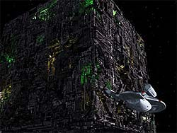
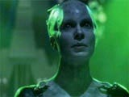

|
Janeway
vs. Primeira Diretriz, Parte IV
 A
USS Voyager completa cinco anos de viagem pelo quadrante Delta e,
embora esteja cada vez mais perto de casa, o senso de obrigao
de Janeway para com a Primeira Diretriz torna-se cada vez mais
distante. Nessa temporada, nota-se uma mudança no comportamento
da capitã. Ela finalmente desencana do noivo que deixou na Terra
e passa a perseguir seus interesses romnticos. Em suma, perde um
pouco daquela fachada de "capitão da Frota" e age mais
como ser humano. Seus métodos no comando também mudam, como
conseqncia disso. A
USS Voyager completa cinco anos de viagem pelo quadrante Delta e,
embora esteja cada vez mais perto de casa, o senso de obrigao
de Janeway para com a Primeira Diretriz torna-se cada vez mais
distante. Nessa temporada, nota-se uma mudança no comportamento
da capitã. Ela finalmente desencana do noivo que deixou na Terra
e passa a perseguir seus interesses romnticos. Em suma, perde um
pouco daquela fachada de "capitão da Frota" e age mais
como ser humano. Seus métodos no comando também mudam, como
conseqncia disso.
Em "Counterpoint", ela concede proteo a um
grupo de refugiados e os mantm escondidos do Imprio Devore,
uma civilizao militarizada e altamente avessa a telepatas. A
Voyager consegue permissão para atravessar esse territrio, mas
a tripulao tem de se submeter a inspees dirias, nas
quais soldados Devore abordam a nave e procuram por traos de
'mercadoria ilegal'. Acontece que os refugiados, assim como
membros da tripulao com poderes telepticos (incluindo Tuvok),
eram mantidos em suspenso no sistema de transporte. Isso
assemelha-se ao processo que manteve o eterno Scotty (Série
Clássica) vivo durante 75 anos a bordo da USS Jenolen, encontrado
e reanimado pela equipe mdica da USS Enterprise-D, no episódio "Relics",
da Nova Geração.
Ao proteger esse grupo de pessoas, Janeway está infringindo mais
uma vez a Primeira Diretriz, pois envolve-se nos assuntos
polticos de um povo no-pertencente Federao. Alm
disso, vive uma contradio: envolve-se com o inspetor
encarregado da Voyager. Ao mesmo tempo que quer manter os Devore
longe de sua nave, rouba uns beijos do oficial... Mas, deixando a
vida pessoal da nossa herona de lado, esse ato de coragem e
solidariedade ps seus tripulantes em grande perigo e sua nave
correu o risco de ser confiscada pelo inimigo.
 Mais
frente, em "Dark Frontier", tem-se o ponto
alto de toda a quinta temporada. Kathryn mais uma vez enfrenta os
Borgs, mas desta vez no tem planos de alterar o curso para
evitar a 'tempestade no horizonte'. Pelo contrário, destri uma
nave e persegue outra seriamente avariada, visando roubar seu
dispositivo de transdobra. A obteno dessa tecnologia, mesmo
que por métodos no-convencionais, significaria uma reduo de
quase 30 anos na longa jornada da Voyager. Isso inevitavelmete
remete quele episódio do primeiro ano, "Prime Factors",
em que a capitã se recusa a conseguir pelo mercado negro de
Sikarian a tecnologia de espao dobrado, que instantaneamente
cortaria 40 anos da viagem (se no se lembra desse evento, volte
primeira parte deste texto).
 A
missão foi um sucesso, mas a tripulao encarou a Rainha Borg
em pessoa... e estabeleceu um 'relacionamento' com ela, melhor
explorado em "Unimatrix Zero", episódio-piloto
da stima temporada e que alis aborda novamente a questo da
Diretriz.
Bem, 30 anos mais perto da Terra, a USS Voyager segue seu curso.
Mas algo sem igual acontece em "Think Tank".
Novamente sob ataque de foras hostis, a capitã recorre a um
grupo de alienígenas que 'soluciona problemas' em troca de algo.
interessantsima a fala de Janeway durante a negociao do
preo, quando o contratado pergunta sobre o que ela tem a
oferecer: "Os esquemas da Voyager e uma reviso do banco de
dados. Especifique o que querem e verei o que posso fazer. Eu
recomendo os replicadores, que estão muito populares este
ano..." Por acaso, algum se lembra do dilema levantado em "State
of Flux", envolvendo os Kazons, no primeiro ano da
série?
Algumas semanas adiante, no episódio-duplo "Equinox",
que marca a transio para a sexta temporada, a Voyager descobre
outra nave da Federao perdida no quadrante Delta. Trata-se da
USS Equinox, sob o comando do Capito Ransom. Essa pequena nave
com apenas 38 tripulantes foi encontrada em pssimo estado,
resultado de constantes ataques alienígenas. Em um momento do
episódio, quando Janeway e Ransom conversam de capitão para
capitão, ele a pergunta se j havia infringido a Primeira
Diretriz. Curiosamente, ela responde que nunca a violou... Enfim,
o quinto ano se encerra com uma batalha entre as duas naves, j
que a capitã descobre o envolvimento de Ransom na morte dos
alienígenas que os atacavam. Aparentemente, sua tripulao
assassinava esses seres e usava seus restos como combustvel para
a restrita Equinox, que em condies normais no ultrapassa a
dobra 6. A justificativa dele? Bem, ele queria proteger seus
oficiais do tenebroso quadrante Delta e chegar mais perto de
casa... lembra algum?
Daniel
Sasaki co-editor do Trek
Brasilis
|